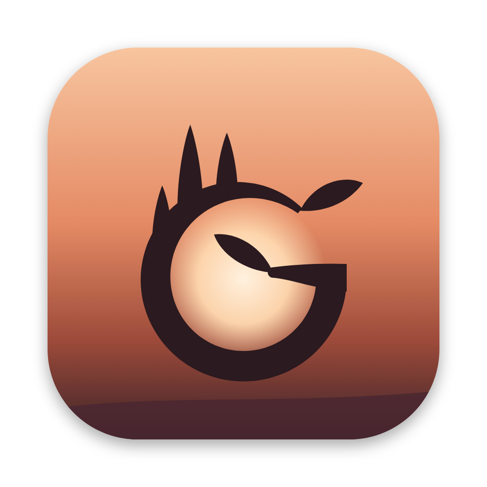

Grove
Run Claude Code agents side by side — one worktree per feature.
Running more than one agent?
✗Six terminal tabs. Which one is waiting on you?
✗Two worktrees fighting over :3000 and :5005.
✗Env files copied by hand. CORS breaks. Login breaks.
✗Where's that PR? Did CI pass? What was I doing?
One window per project. Every feature, side by side.
Each feature: its own worktree, branch, ports, dev servers and Claude session.
The header tells you everything at a glance
what it's working on · what to do next · PR and CI · ports · where it is in the lifecycle
Know who needs you:
❗ needs you✓ your turn⏳ working
plus a Dock badge and a notification the moment an agent is blocked on you
Logs and a shell for every feature, one click away
A new feature in one step
❯ grove new NUM-1234 -p "add CSV export to the variance report"
✓ worktree ~/projects/numosai/num-1234 on ramki/num-1234
✓ ports be :5012 · fe :3007 (login-safe)
✓ env rewritten for those ports · deps cloned
✓ servers up in their own panels
✓ Claude started, briefed from the ticket
or + New in the app — works with any repo through a small .grove.json
And it fits how you already work
Spin-offs
Ask Claude to spin off related work. It writes the handover; Grove creates the feature.
Adopt
Bring in the worktrees and terminal conversations you already have — history intact.
Quit anytime
Every agent and server runs in tmux. Close Grove; nothing stops.
Try Grove
github.com/ramkivenkatachalam/grove
./install.sh · grove project add ~/your/repo · npm run install-app
Mac · Claude Code · tmux · any git repo